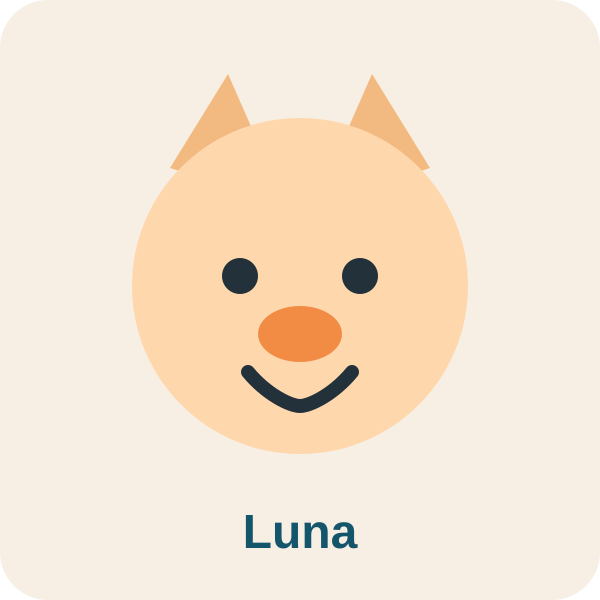
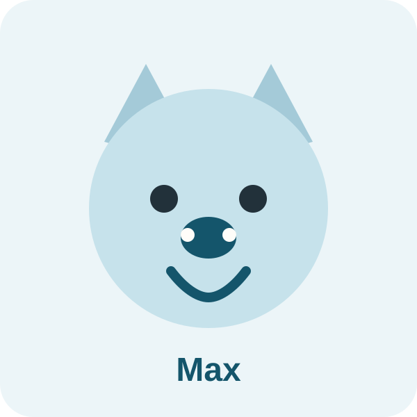
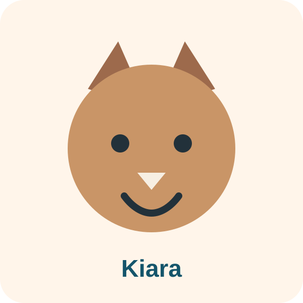
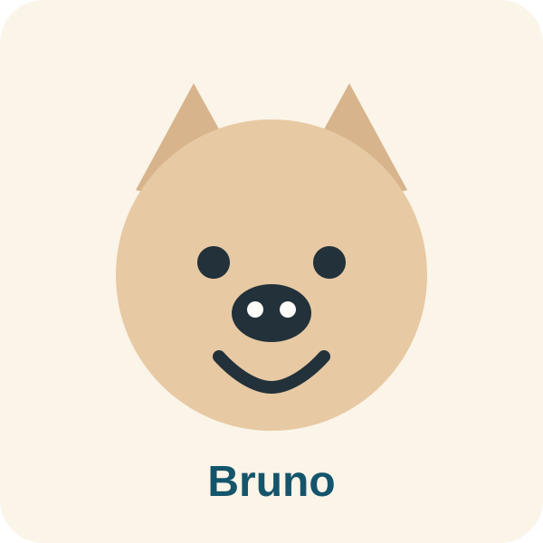

Un lado personal
Mis mascotas tambien hacen parte de la historia que quiero contar.
Esta seccion muestra un lado mas cercano de mi portafolio. Quise incluirla porque tambien me gusta que una pagina personal tenga detalles que hablen de la persona detras del trabajo.
Galeria personal
Compania, calma y un toque de personalidad

Luna
Tranquila, curiosa y de esas companias que hacen sentir cualquier espacio mas calido.

Max
Energia pura, actitud juguetona y una presencia que siempre termina robandose la atencion.

Kiara
Observadora, elegante y con esa calma que le da equilibrio a todo alrededor.

Bruno
Fiel, activo y con mucha personalidad. De esos companeros que siempre se hacen notar.
Luna relax
Su version mas serena, perfecta para recordar que tambien hay belleza en lo simple.
Max sprint
Movimiento, curiosidad y ganas de explorar. Un detalle mas dinamico dentro de la galeria.